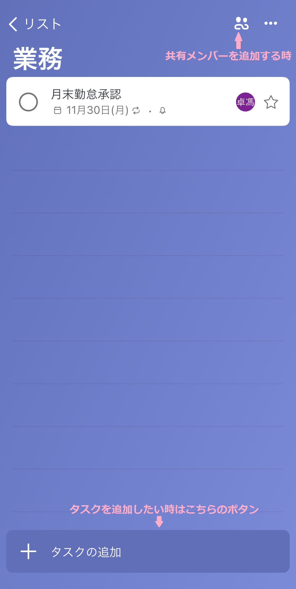
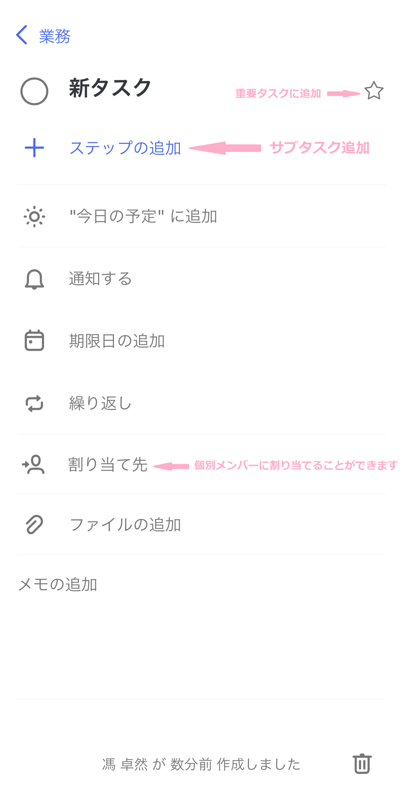
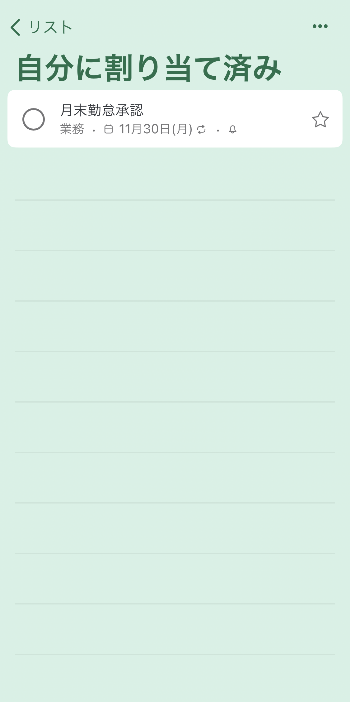
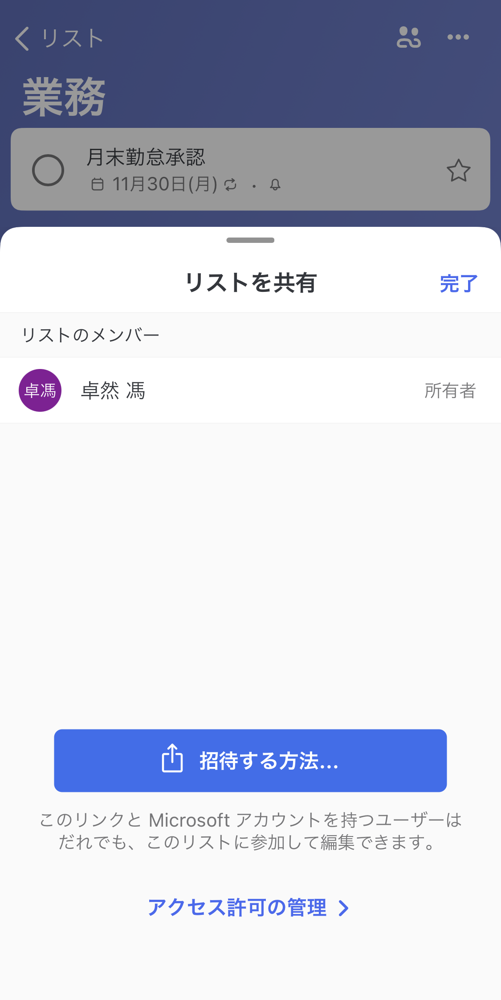

ガイド
インストール方法

ログイン

タスク管理
タスク画面はこんな感じです。

タスクを押下すると詳細画面が表示されます。

割り当てたタスクは「自分で割り当て済み」で確認できます。

共有方法
リスト画面の共有ボタンを押下するとお好きな方法でリストのリンクを共有できます。

グループ作成
ホーム画面のグループボタンを押下するとリストをグループ化することができます。

最後に
日常使いでよく使う機能は大体こんな感じです。他にも色んな機能がありますのでぜひ使ってみてください！